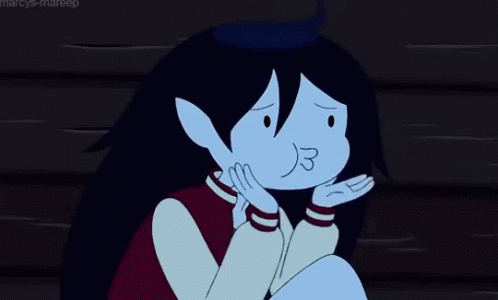
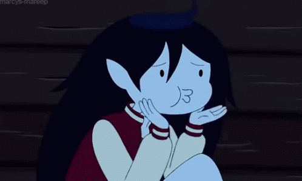

Congratulations and thank you for being open sa retreat!!

Enjoyed na enjoyed yung field trip kaya nakatulog.
OMGGGG!! First BOYNEXTDOOR concert mo!! More concerts to come!
Grade 9 Recollection, staying strong ka dito (bangis ng mirror shot)
Survived the Mamma Mia pt kasi nakapunta sa practice na puro byahe!
Glad that u survived dengue, even if di ka naka-attend sa last day.
Nagka-apo ka galing kay simba!!
Well, you've not only grown physically but you've also grown as a woman, a friend and a person. And that's the greatest achievement that you can be proud of.
"Happiest Birthday, Czay!!! I hope you enjoy your day today, may God bless you with all the things you desire in life! Gusto ko lang din mag thank you for being a good friend to me. Palagi kang nand’yan when I need someone kahit hindi tayo super duper close. Thank youu din na palagi kang nakikinig sa mga rants ko kahit paminsan walang kwenta 🥲🥲 Kahit napaka opposite natin, nagtutugma parin tayo?!?! HAHAHAHAHAH Siguro nagsasawa ka na sa’kin na palagi kong sinasabi ‘to, pero mamimiss kita so much! Bibisitahin parin kita sa SMC and sana pagpalain ka SHS life mo. Kahit magbagong buhay na ako o makalimutan ko na yung buhay ko sa SMC, I’ll never forget our memories together and I’ll always be forever grateful for uu!! You never judged me, and never mo ‘kong trinato na parang outcast. Isa ka sa mga tao na super grateful ako ever since grade 8 dahil isa ka sa mga nakakaintindi sa’kin. Thank you for always making me feel included and yung mga chikahan natin HAHAHAHAHA sana sa March maging seatmates tayoo kasi ang tahimik ng buhay ko sa likod hahajahaha 😅 Always be the gentle and open-minded person that we all love! Continue on sharing your kindness and wit to everyone! ❤️ Happy Birthday Czayy, I love you sm!! 😚😚"
Haiiii, HAPPY BIRTHDAY! So ayun, I think you know naman na kung sino gumawa netoh. HAHAHAHAHA HAIHAIIII, I hope you're doing well and being better. I just want to say a few things o baka maging many pa nga eh, bear with me nalang huhu. This website gift is possible because of your friends!! You should also thank them because this gift won't be possible kung di dahil sa kanila. Firstly, I want to thank you for everything you've done. Sa simula't una, ikaw yung nagshoshow up. I know that "you're not good with words" pero di naman yun yung basehan ko when I'm down. I just need the presence of someone when I'm down, the feeling that someone is staying by your side — being peacefully silent. And that presence, that someone, that person who I want to stay and have by my side is you. The fact that from the first time we've met, you're just there. You're just listening to me — yapping about my likes and all. Partida messenger pa tayo nagchachat non😭. That may be one of the days na naenjoy ko mag-open sa tao na bago ko pa lang nakilala. I really felt the peace and comfort in your presence. And ayun, naging magkatabi tayo and mas naging close pa lalo. And lowkey ikaw yung pinaka matino na nakatabi ko sa buong seating arrangements na naganap, no joke. You're so kind and patient to me, like so much😭. So at once, I show immediate concern nung nalaman ko na masama yung condition mo nung last days ng grade 9, glad that you survived!! Meeting you made me felt that there's still kind and genuine people in this world. I was right when I expect you to be kind and all simula nung una kitang makita nung grade 9. You're not only good looking outside, but your heart is also pure. You're really interesting as I always say, mind you na minsan lang ako magshow ng interest sa tao. Like sa first sight and all. Baka di ka maniwala pero seryoso ako don😭. You're the reason of many changes sa sarili ko. The reason na may mga nadiscover ako and mga nabago sa sarili ko na dapat baguhin at matuklasan. I don't expect na magugustuhan ko ulit yung kpop cuz of u. Medj di ko talaga siya bet sa simula't una pero I just listen to the wrong groups lang pala. You also teached me how to play Heongsam!! It was really fun and lowkey I really miss playing with you. Di lang heongsam pero yung mga kulitan natin and all miss ko na. And grade 9 ends. My grade 9 ended happily after meeting you.
Medj tumagal pa talaga admiration ko sayo non and umabot siya ng first half of summer break. Lowkey, muntik nako mabaliw sa pinaggagagawa ko. I was overthinking and all, seeing if you really cared or what, so I just did what I shouldn't do talaga before😭. First confession ko sayo HAHAHAHAHAHA. And lowkey sana di ko nalang yun ginawa para talaga slowburn type shit yung nangyare diba? pero it happened na eh, ano pa ba magagawa ko. Even so, I tried to move on cuz you said so. And ayun, I stopped admiring you hanggang mag last day ng enrollment. Ilang days nakalipas, a week or two i think. I stopped na totally. Ayun blablabla, ang manhid ko sobra sa parts na wala akong nanonotice sa mga actions mo sakin. And manhid ko sa part na di ko man lang nakikita yung hints and efforts mo sa akin. Then ayun, while giving me your efforts and all — I was being careless na sa mga pinaggagagawa ko and I hurt you like so much. The tragedy happened and ayun, you didn't leave. You didn't leave when I have no one. Lowkey, gusto ko mapag-isa non but you insist on staying. And that's when I realize na, di sa lahat ng bagay, kailangan mong mapag-isa. Di sa lahat ng bagay, kailangan mong masolusyunan mag-isa. You're the one who initiated na you'll stay, without me even asking you to stay by my side. At that point, I really thought that you'll also leave me for what I have done and become. But instead of leaving, you changed me — changed me for good. You gave me a second chance to redeem myself as a friend. You've made a big impact to me, and having you as a friend is the best thing I had in my life so far. You literally saved me, your presence saved me. You said you're not good with words but the words isn't really what I need, I need a person who stays. You saved me from getting pulled by the voices inside my head. You saved me from dying, literally. And everytime I have problems that I don't want to be judged, I always look for you and you're always the first one to know. Tulad nung basketball game, I just want someone to listen — to be seen. Lowkey, I was disappointed nung di ka nagrereply or nagseseen man lang, cuz I knew nakita mo yon, I knew na ayaw mo lang yun buksan and all I want is a little support and to feel that I am seen and heared without judgement or anything else, showing up is enough and saying "it's fine" is better than leaving me delivered. I was hurt, pero I gave you another chance — chinat kita sa dump ko and ayun, you responded. And lowkey, kahit makita ko lang yung slight reactions from you. Gumaan na loob ko, so thank you na even if "You're not good with words" you're still trying, you're being there, showing up. You did more than I wanted, more than I expected, more than I needed. Thank you for the efforts you gave to me. Pero one of the best efforts that really gave me the tears of joy na minsan ko lang matanggap is nung binigay mo yung gatorade before smc fest exhibition and the bday gift. Sorry if mabibring up ko yung cringe things pero let the mood and atmosphere take over. I really appreciated it, it was priceless. The effort that you put in the gifts, the thoughts, every material, every stroke. I really appreciate them. It was a moment of softness while I read the letters, the words that your own hands woven. It made me cry, it made me feel contented. And those gifts are still in my wallet, those gifts are kept hidden and cherished all day. Thank you for everything you did to me.
I'm really sorry if sumosobra ako, 'di ko maipagkakaila na may mga kasalanan din akong nagawa sayo. Medj I have things na hurted you and I want to say sorry. I made you feel like an option, I'm really sorry. I'm also sorry that I'm annoying and all. I'm really sorry for feeling jealous, for seeking much attention. Lowkey, I didn't expect na I have this jealous side😭. Pero there's something that I'm really sorry for. It is not making your first time, one of the best experiences in your life. I've made mistakes and made you uncomfortable and pressured in some way that made you left me. You may say that it's your fault for feeling like that, but for me — I don't see anything wrong from what you did. I want to take the blame, I made you feel pressured. As the first one you took the risk for, I'm really sorry for making your first experience bad. I know may mga things naman na magandang nangyare sa atin pero, there are things na 'di pa talaga natin nakikita sa sarili natin and we have an identity crisis that led us to conflicts and misunderstandings. And those misunderstanding about ouselves led us to hindrances to deeper connections and intimacy. We still have many things to learn, but I'm still hoping that we can learn with each other's company. I'm always open if you're ready, I'm still waiting for you to be open. But for now, I'm still sorry for everything I did wrong to you.
Knowing you was the best thing, like it was one of the best thungs happened in 2025. Andaming naganap sa 2025 na sobrang lala, like as in. But most of the moments na masaya ako is nandoon ka. Most of the best things happened in 2025 was with you. Remembering them still makes me smile, knowing that it happened to me. You peaked my interest and we became friends. After that, we made memories and all. From random gala kasama friends mo, to the moment na hinahatid pa kita sa farmers after ng galaan. I miss those days, careless about what's tomorrow and what will people say. I thought that was casual pero lowkey hindi pala😅. The moment you introduced me to d'cream, binabalik balikan ko na siya after. After knowing kung anong pasikot sikot na daan jan sa farmers, I used them. The moments na pinakilala mo yung things na ganito and ganyan, I started to like them. One of the things na really nagustuhan ko after mong i-introduce sakin is BOYNEXTDOOR. Like, it was one of the reasons kung bat ako nahilig sa kpop once again. Knowing you also made me calmer. There are times na nakikipag bardagulan ako sa mga kaibigan ko sa likod that leads to some accidents and all. Pero after ko matabi sayo, medj parang ayoko nang umalis sa kinalalagyan ko. Like when there are free times and all, I choose to sit next to you or sa lapag kasama kaibigan mo instead of going at the boys. Cuz like, I choose to be close to you since your presence gives me real happiness rather than quick happiness and a long term guilt and regret after when I'm with the boys. Di ko pa ata nasasabi sayo toh or what pero nasabi ko toh kay Lhian eh HAHAHAAHAH: "Pag nangungupal ako ng tao, pag alam kong malala na... Nagsosorry ako, kasi I feel the guilt. Oo aaminin ko natuwa ako sa pangungupal pero iba yung genuine happiness kesa sa quick happiness with an after effect of guilt. " And lowkey, I find genuine happiness when I'm with you. So if napapansin mo man or what, I don't care about how fun the boys are doing as long as I'm with you, I'm contented and happy. Knowing you encourages me to do better. From sports to academics. From hobbies to work. I worked hard after I met you because the biggest help I can get is a word from you. Even a little "kaya mo yan" or something like that, lits up my mood. That's why nagvarsity ako, you supported me and all, you're always there when I'm up and when I'm down. You're the reason I keep moving. And lowkey that's why I chose your number to be my ersey num. To remind me why I'm doing this. I also worked hard, like literal work. Nagtrabaho ako to earn money to buy gifts for you😭. Pero wag ka maguilty dahil di mo naubos pera ko. Halos lahat ng pera ko nasa tiyan ko na😭. Pero seryoso, I worked again to earn money and buy gifts for you. That's why I'm satisfied when you appreciate the gifts I gave you. All of then are made by efforts. I also study hard, so that I can teach you things that you can't understand. In short, I became better, just for you and because of you.
Lowkey, I didn't expect na magkakaroon pa ako ng isa pang gift sayo, di ko expect na kaya ko palang gawin toh para lang sayo. Madami akong nagawa na di mo alam, madami dami yung sacrifices na nagawa ko. Pero I want to let you know para mapakita na I'm willing to do everything I can, not to make you feel guilty. I want you to appreciate the efforts, not be sad because of what I did tas wala kang magawa. Cuz I do this to make you happy and to make you satisfied. Recently, andami kong nilakad. Inikot ko yung buong araneta, pumunta sa Sta. Lucia, sa Robinsons, tas sa Ayala mall para lang sa fuggler m... The original plan was to go to ortigas, SM megamall, since may kakilala ako don and may condominium kami don. Pero imbis na sa mrt pumunta, sa lrt. Pumunta nalang ako sa marikina-pasig station cuz dun yung maraming malls. Edi inikot ko yung buong Sta. Lucia pati robinsons. Wala akong nakita, tas nadaanan ko pala yung ayala mall, medj malayo sa train station but I chose to walk. Naglakad ako ng medj mahaba, tas naghanap. Luckily I found toys Rus and nabili ko na fuggler mo. Bumalik ako sa araneta tas bumili ng Mini Boquet, then nakauwi na ako sa bahay mga bandang 9:00+ na. Tas lowkey, puyat na puyat ako these days is because of the website. The website is hand typed and self made. Medjo mahaba yung coding nya pero it was worth it? I hope so. All of those while keeping myself in work(both digital work and irl work), Academics, hobbies, liesure time, varsity, responsibilities and you. Lahat ng yon napagsabay ko while still giving you time. Nagipon ako nang nagipon, minsan nga di nako gumagastos sa gala namin eh, prioritizing you. Maybe yung mga actions kong toh is grabeng grabe. Pero I hope you got the message that I will do everything I can do for you. So I hope you appreciate everything I gave instead of having the guilt. A little thank you and a smile payed everything off. No debt, no extra tax, nothing else. Just by seeing you happy, my tiredness wores out.
But even in the days that I'm really busy, even in the days that my schedule is loaded. I still think about how wasteful I became. Sinayang ko yung chance, the chance of loving you and having you by my side in a deep manner. Nasayangan ako boi. well maybe it is really my fault for being too much, for being the one who needs the attention of someone who isn't used to be giving affection. I was my fault. Yes, I admit that you have some mistakes but lowkey, if you think of it in a deeper level, I'm the one who should be blamed since I can't change for someone I love even if that person said to me already that I should change. You gave me another chance as situationship, but I lost it. Yes, I tried but I think trying is not enough. But even if our relationship was full of confusion, discoveries, misunderstanding and uncertainty. It was really fun, it was a good run tbh. I really enjoyed the time that we shared together. Di lang nung after mo umamin pero nung mga times na di mo pa sinasabi yung nararamdaman mo sa akin and we're just really close friends na laging nashiship. Those moments, I always look back at it and the nostalgia hits. I really miss those times that we're just 2 people who's hiding the feelings for each other. Tbh, I really do backread to our messages. The moments that we shared and the things we talked about the most. I really hate the nickname "stephanie" but recently, when I look back from the past. I realized that "stephanie" wasn't bad at all. That being called "phanie" by you is one of the things I find cute nowadays. The moment na hinahatid pa kita sa farmers. And lowkey I still do, maybe not you anymore, but the ghost of you. If I felt the feeling of missing you so badly, I always go to the route we always take when I'm walking you home. Drinking the drink you've introduced me and playing the music I've dedicated to you. I even cried once while doing it. I'm reimagining the things we used to do while walking. Reminiscing about how happy we are with each other's company. Doing goofy walks, talking, laughing and just being ourselves. Confessing what our heart feels, saying what we really want to say. It really is true that "I yearned more than I had you". I yearned for you more than I expected, I cried every night yearning for you. I cried at the school bathroom, sa farmers, sa retreat, even in the classroom. But lowkey, not all of those are tears of sadness. Some of them are tears of joy. The joy from the fact that you are here for me. The joy from the fact that you stayed even in hard times. You've done too much for me Czay, you've tolerated my red flag problematic side. Tinanggap mo ko, kung ano man ako, maingay, magulo, minsan pa nga sumosobra na ako eh. Pero you still stayed, you still tried. I'm sorry if you've lost the spark, but I can't change what you feel. I can just hope for the best and wait for eternity even if you don't let me. Czarylle, I'm sorry in advance if this is cringe but. If the moment is replayed again, if there will be a chance of having you by my side and walking you home again or any moments that I'm with you again, I will cherish it. And if you'll let me, I'll hold you hand — since I haven't held your hands tight, haven't felt the warmth that it gives. Since I haven't even said the things I wanted to say to you before, even if I have the chance to tell you so. Sa dami ng nangyare sa ating dalawa. I haven't even held your hand tight, sa dami ng pinagusapan nating dalawa, I haven't even said I love you directly and tell the things I wanted to really tell to you. So for once, I would like to take this opportunity, even if it feels wrong. Czarylle, I love you — I really do. I loved the thought of being with you and spending time with you. Because to be honest, I really miss you, I really miss you everytime we part ways. I miss you everytime we didn't talk, I miss you like I miss the old us. I hate to admit it but I can't afford losing you. Czarylle, you're the first girl, the first person who made me felt this way. And I hope you understand where I am rooting for and what I want to say. I don't expect things to be reciprocated, I don't expect things to be given back to me. I just want to show that you deserved to be loved, that you deserved to have things that you want. That you deserve to flex that there is someone for you that will always support you and will be by your side through ups and downs. Czayy, I will always love you and nothing can change that, I will love you the best way I can. I want to learn how to love you, learn to handle you. I like you, and I'm willing to wait even a millennium just to be with you.
Enough na sa drama and baka nacicringe kana, I'm really sorry. Pero now that everything I want to say is said na. I want to say na I hope you the best in life. I hope you can achieve the dreams you dream to be. I will always support you, we will always support you. As your self proclaimed No. 1 Fan I'll always be cheering by yourside and be there for you when you need someone. I hope you can be successful in life and finally I hope you can know yourself better. I hope you can have the courage you wish to have, the braveness you wanted to possess and I hope you will change your "avoidance" for the better. Czarylle, it may look sad pero. I'll be silent na for now. I'll be admiring you nalang muna Czarylleee. I will just be there, waiting but not making a move na siguro. It's not like I'm quitting but it's because I want you to have the "freedom" you really wanted. So for once, I'll let you be and I'll let you be happy. I want to prioritise your happiness even if the reason of your happiness isn't me anymore. Dw, I'm always be here, If you'll reach out and you need me. I'm always here. If you're doubting yourself, I'll try my best to strengthen you. If you want some soft hours and someone to have in silence or loudnsss. I'm always here. If you want to hang out or what, I'm always available (kahit magpalibre ka pa, okay lang). I'm willing to give you reassurance if you're confused, if you're doubting me. I really like you Czarylle. I just want you to feel "free". Thank you for the chances and everything you've done to me Czarylleee. Happy Birthday!! ENJOYSZ PU DAMMYY! (pic natin sa moving up ha, grrr)